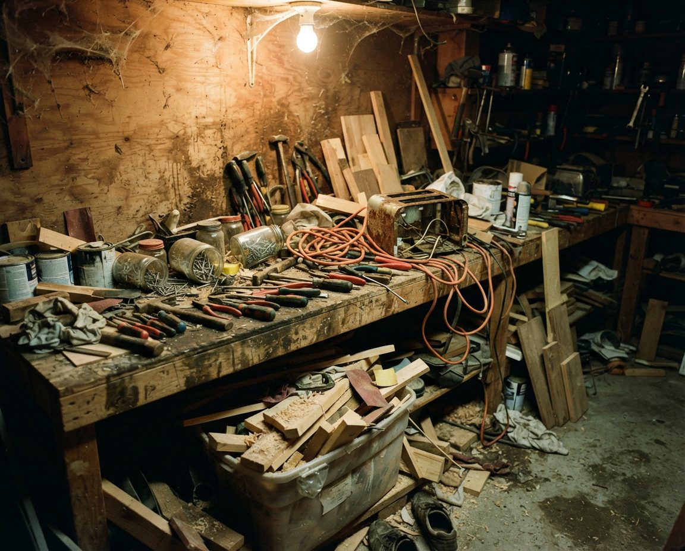

Most garage cleanout advice is written for the person selling the house. This page is for the other side of the deal: the buyer who opens the overhead door on possession day and finds a workbench buried in old tools, half-empty paint tins along one wall, a mattress against the other, and the seller already on the highway to Kelowna. Sometimes it's the buyer's realtor who calls, because their client sent them a photo from the driveway.
The order matters more than the speed. If you haul it all to the curb this afternoon, you may lose the chance to have the seller pay for it. If you wait a month, the same thing happens. The few hours after you get the keys decide most of it.
Fastest start: text (587) 804-9266 three photos of the garage with the door up, the address, your possession date, and whether your lawyer has released the money to the seller yet. If you don't know that last one, say so. We'll explain why it matters below.
The First 24 Hours With the Keys
Under the standard Alberta purchase contract, possession usually happens at noon on the completion day, and the seller owes you vacant possession. A garage you can't park in because it's full of their belongings may not meet that. Whether it does is a question for your real estate lawyer, and we aren't lawyers. What we can tell you is the order that keeps your options open, based on what Alberta real estate lawyers publish for buyers and on how a cleanout record gets used afterwards.
| When | You | Us |
|---|---|---|
| Final walk-through, if you do one before possession | Open the garage, the rafters and any shed. If it's full, tell your realtor and lawyer that day, before the money is released. | Text us photos and we quote from them, so your lawyer has a real number for a holdback. |
| Possession day, first hour | Take the nine photos below before you or the movers touch anything. Check for the garage door remotes and keypad code. | Nothing yet. We don't want to be the reason the evidence moved. |
| Possession day, same afternoon | Call or email your lawyer and your realtor with the photos. Ask whether funds have gone to the seller and whether a holdback is still possible. | Written quote back to you, usually the same day for photos sent before noon on a weekday. |
| Next day or two | Your lawyer contacts the seller's lawyer. You decide whether to give the seller a pickup date for anything that looks valuable. | If you need the garage now, we can haul only the plain garbage and hazardous products and leave the rest photographed and taped off. |
| Once you have an answer | Tell us to go. | Full cleanout, receipts, after photos, and a dry-swept floor. |
A holdback is money kept back from the seller's sale proceeds until a problem is fixed. Lawyers set them up before the money moves, which is why a problem found on the walk-through is far easier to deal with than one found a week later. If the funds have already gone out, your lawyer can still ask the seller's lawyer for the cost. The photos and our receipts are what that request rests on.
Nine Photos to Take Before Anything Moves
Use your phone so every photo carries the date and time. Take them before the movers carry a single box into the garage, because once your things are in there too, nobody can tell whose pile was whose.
- From the driveway or lane with the door fully up, showing the house number or the back gate so the address is in the frame.
- Each of the three walls, straight on, close enough to read box labels.
- The rafters or ceiling storage, where most leftovers hide and walk-throughs miss.
- The floor in both parking spots, including oil stains and anything leaking.
- Every paint tin, fuel can and chemical jug, with the label readable. These may need special disposal and can be part of the cost claim.
- Anything that looks valuable: a tool chest, a bike, a snowblower, a generator. Get the brand and any serial number.
- Anything personal: photo boxes, paperwork, trophies, kids' artwork. These usually go back to the seller.
- The opener on the ceiling and the wall button, plus the keypad outside, so it's clear what came with the house.
- A short video walking the whole garage, saying the date out loud.
Send the set to your lawyer, your realtor and us at the same time. We keep our copy with the job file and use it again for the before-and-after record at the end.

Left on Purpose, or Left Behind?
Not everything in the garage is the seller's problem. Some of it belongs to the house, and some of it you'll be glad they left. Check the included-goods and excluded-goods lines in your purchase contract first. The general rule Alberta brokerages describe is that attached things stay and unattached things go unless the contract says otherwise. Here's how that tends to play out in a Calgary garage.
| Item | Usually | What we do |
|---|---|---|
| Opener, wall button, remotes, keypad | Stays with the house | Left in place. If the remotes are missing, tell your realtor; they're often in a kitchen drawer. |
| Shelving or overhead racks bolted to studs or the ceiling | Stays, as attached | Left in place and emptied. |
| Freestanding metal or plastic shelves | Goes, as unattached | Hauled with the rest, or kept if you want them. |
| A workbench | Depends on whether it's built in or just standing there | Photographed. We ask you and leave the call to your contract. |
| Labelled leftover paint that matches the house | Often left on purpose for touch-ups | Set aside for you to keep. Unlabelled or dried-out tins go to hazardous waste. |
| Spare shingles, siding, flooring or tile from the house | Often left on purpose for repairs | Set aside for you. They're hard to match later. |
| Manuals and warranty papers for the furnace, water heater or opener | Belongs with the house | Bagged and handed to you. |
| Furniture, mattresses, boxes, bikes, old electronics | The seller's | Sorted into the three piles below. |
Whether something is a fixture can be argued both ways. A shelf held up by two screws is the kind of thing two lawyers can disagree on. When it's unclear, we photograph it, leave it, and let you decide once you've heard from yours.
Three Piles: Junk, Maybe-Valuable, Hazardous
After the photos, every leftover goes into one of three piles. The pile decides how fast it can go.
| Pile | What goes in it | When it can leave | Where it goes |
|---|---|---|---|
| Plain junk | Garbage bags, broken furniture, rotted boxes, a stained mattress, scrap lumber | Once it's photographed and your lawyer has no objection | City landfill, with the weigh ticket kept. Usable items go to a charity drop-off instead. |
| Maybe-valuable or personal | Tools, bikes, sports gear, a snowblower, photos, documents, anything with a name on it | Only after the seller has had a fair chance to collect it, in writing | Taped off in one corner, or moved to a storage unit if you need the space. Picked up by the seller, or cleared on your lawyer's say-so. |
| Hazardous | Paint, solvents, gasoline, propane cylinders, pesticides, car batteries, old motor oil | First, on safety grounds, once it's photographed | A City household hazardous waste drop-off at a fire station. Never the garbage load. |
Hazardous products leave first because you don't want a cracked gas can in a garage where the movers are about to stack your furniture, and because household hazardous waste isn't allowed in a garbage load. We pull them on the first visit even if everything else has to wait.
If the garage holds something worse than leftovers, like a heavy layer of mouse droppings, mould on stored boxes, or a hoard that runs into the house, tell us before we book. Our mouse droppings cleanup and hoarding cleanup pages explain how those are handled. They change the crew, the gear and the price.

A Quote and Receipts Your Lawyer Can Use
When a lawyer asks the other side to pay for a cleanout, they need a number before the work and proof after it. We set the job up to produce both.
- Before: a written quote from your photos, addressed to you, with the property address and the possession date, broken into hauling, hazardous waste and any storage. Your lawyer can use it to size a holdback or a demand.
- On the day: our own dated photos at the start, and again with the three piles sorted.
- After: the invoice with the same breakdown, the landfill weigh ticket, a note of what went to the hazardous waste drop-off and any charity drop-off, and the after photos of the empty garage.
We send the whole set to you, and to your lawyer if you ask. We don't contact the seller or their lawyer ourselves. That conversation belongs to your lawyer, and keeping our crew out of it keeps the record clean.
Berjak Law, an Alberta firm, has a plain-language article on what buyers can do when a seller leaves belongings behind that's worth reading before you call your own lawyer. Nothing on this page is legal advice.
If the Seller Wants to Come Back for It
Plenty of sellers didn't mean to leave the garage full. The movers ran out of room, or they were planning a second trip and possession came first. If yours asks to come back, get it in writing through the realtors or lawyers: which items, which day, a time window, and what happens to whatever isn't collected by then.
You don't have to be home for it. We can sort their things into the taped-off corner ahead of time, be on site for the pickup window, and send you photos when it's done. Whatever they leave after the window closes, we clear on your instruction once your lawyer is satisfied. If the items belong to a tenant who rented the house from the seller, say so when you book. That's a different situation, and your lawyer will want to know.
Clearing It the Same Week You Move In
Possession day and moving day are often the same day in Calgary, and the garage is where movers drop the overflow. A full garage on that morning means your boxes end up in the living room or on the driveway.
- Hazardous pile and plain junk first. With your lawyer's okay, we can clear those in the morning and leave a taped-off corner for anything the seller may collect, so the movers have a lane in.
- Lane garages in winter. The City doesn't plow back lanes. In inner-city neighbourhoods like Mount Royal, Altadore and Marda Loop or Lakeview, tell us if the lane has ruts or drifts so we bring the right truck or carry from the street.
- Dry sweep only, for now. Calgary has been under Stage 4 outdoor water restrictions since November 4, 2026, so we finish with a dry sweep and no hose. If the seller also left oil on the slab, our oil stain removal page covers what can be done without water.
- Same day, if it's urgent. Photos before noon on a weekday give us the best chance. Our same-day garage cleanout page explains how those days are decided.
Once it's empty, plenty of buyers want the garage set up properly before the first snowfall fills it again. That's our garage organization team, booked separately.
Pricing a Garage Someone Else Filled
We quote from your photos before booking, and we don't publish flat prices because a garage of someone else's things varies too much. These are what move the number:
- Volume and weight. City of Calgary landfill fees are $25 for a residential load of 250 kg or less and $113 a tonne above that. Tires and electronics are free if kept out of the garbage load.
- Fridges and freezers the seller left in the garage, at $17 each for the refrigerant at the landfill.
- The hazardous pile, since it goes in a separate trip to a fire station drop-off.
- A split job, if the seller gets a pickup window and we come back afterwards to clear what's left.
- Storage, if maybe-valuable items have to leave the garage before the seller decides.
- The carry, from a lane garage, a tandem bay or a tight side gate to the truck.
For a closer look at how Calgary garage loads are priced, see garage junk removal cost. If you'd rather rent a bin and do it yourself, our bin or crew page compares the two, though a bin won't take the hazardous pile and won't give your lawyer an itemized receipt. GarageScape is insured and can send proof of coverage to you or your lawyer before the job. More about us is on the about page.
Questions Buyers Ask After Possession
What can I do if the seller left stuff in the garage after possession in Alberta?
Photograph everything before it moves, then contact your real estate lawyer and realtor the same day. Depending on your contract and timing, your lawyer may be able to arrange a holdback, ask the seller to remove the items, or ask the seller to pay for removal. We can send a written quote from your photos so your lawyer has a number to work with. This isn't legal advice.
Can I just throw out what the previous owner left behind?
Plain garbage, once it's photographed, is usually the easy part. Items that look valuable or personal, like tools, bikes or paperwork, are different: Alberta lawyers generally advise giving the seller written notice and a reasonable date to collect them first. Ask your lawyer before you clear those. We keep them taped off or in storage until you say go.
Can I make the seller pay for the junk removal?
Possibly. That depends on your purchase contract and what your lawyer can negotiate. A holdback arranged before the sale funds are released is the strongest position. After that, your lawyer can still ask the seller's lawyer for the cost. Our dated photos, written quote, itemized invoice and landfill receipt are the paperwork that request needs.
What is a holdback on a house sale?
A holdback is part of the seller's sale proceeds that the lawyers keep back until a problem is fixed, such as a garage that still needs clearing. It has to be arranged before the money is released to the seller, so raise the problem with your lawyer as soon as you see it.
The seller left paint, gas cans and chemicals. What do I do with them?
Keep them out of your garbage cart and out of any bin rental. Photograph the labels, then they go to a City of Calgary household hazardous waste drop-off at a fire station. We take them on the first visit, even if the rest of the garage has to wait, and note them on the invoice. Labelled paint that matches your walls is worth keeping for touch-ups.
How fast can you clear the garage after I get the keys?
Photos sent before noon on a weekday usually get a written quote the same day, and sometimes a crew the same day. If you're waiting on your lawyer, we can clear the plain junk and hazardous products first and come back for the rest.
Do I need to be there?
No. A lockbox or door code, your photos and your written go-ahead are enough. We send before and after photos and the receipts when we finish, to you and to your lawyer if you want.
Are you insured?
Yes. GarageScape is insured and can send proof of coverage to you or your lawyer before the job.
Will you contact the seller for me?
No. We work for you, the buyer, and we don't contact the seller or their lawyer. Your lawyer or realtor handles that. If the seller arranges to collect items, we can be on site for the pickup window so you don't have to be.
Selling instead of buying? Our garage cleanout before selling page works back from listing photos to possession day. Landlord taking back a rental? See tenant garage cleanout. Clearing a parent's house? Start with estate garage cleanout. For an ordinary cleanout, go to garage cleanout Calgary or our garage cleaning services.